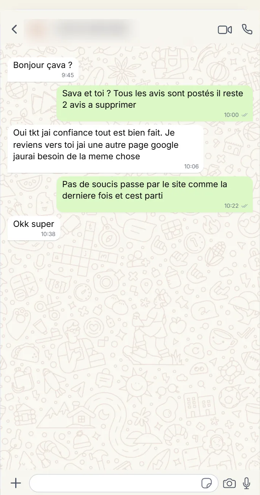

Het vertrouwen van uw toekomstige patiënten wordt vóór de wachtkamer gewonnen. Gunstige Google recensies die uw luisterend oor, uw kunde en de kwaliteit van de ontvangst in de praktijk naar voren halen.
Ons Aanbodvan de patiënten leest de recensies voor het bezoek
maken hun keuze op basis van de recensies
laten alles onder 4 sterren links liggen
meer patiënten
De manier waarop men een arts kiest is verschoven. Voordat zij de assistente bellen, gaan de meeste patiënten langs Google en lezen wat daar staat. Bij precies gelijke bekwaamheid begint een arts met een laag gemiddelde of een vrijwel lege vermelding altijd achter een goed beoordeelde collega.
Google recensies voor artsen wegen vooral zwaar in twee gevallen: iemand die net in de wijk is komen wonen, en iemand die van huisarts wil wisselen. Elke gunstige reactie brengt uw praktijk een stukje dichter bij een volle agenda.
Nu KopenDe eigen beperkingen van de zorgsector ontgaan onze schrijvers niet. De teksten houden zich aan waarneembare eigenschappen: echt luisteren, begrijpelijke uitleg, tijden die worden gehaald, een praktijk waar men zich op zijn gemak voelt. Geen genoemde medische handeling, geen gezondheidsgegeven.
Huisarts, specialist of chirurg, de tekst stemt zich af op uw vakgebied en geeft een geloofwaardige patiëntervaring weer, van het soort dat de lezer geruststelt.
Nu KopenBepaal hoeveel recensies uw reputatie nodig heeft. Zodra de betaling rond is, gaat uw dossier in behandeling.
Een adviseur neemt contact op om de gegevens van uw zaak na te lopen. Die controle zorgt voor recensies die geloofwaardig zijn, natuurlijk lezen en bij uw vak passen.
De recensies verschijnen in gespreide golven, zodat het resultaat niet te onderscheiden is van organische groei. Zichtbaarheid, vertrouwen en conversies groeien week na week.
Recensies bedacht voor de zorgsector, gericht op uw luisterend oor, uw kunde en de kwaliteit van de ontvangst.

De Gouden Gids en de tip van een tante hebben afgedaan: tegenwoordig wijst Google de weg. Een patiënt die een nieuwe arts zoekt, typt „huisarts in de buurt” of „dermatoloog” gevolgd door zijn woonplaats. Wat bovenkomt zijn vermeldingen met hun Google-score en hun recensies. Zonder reacties, of met een slecht gemiddelde, bestaat een arts eenvoudigweg niet naast beter vindbare collega's.
Tussen een arts en zijn patiënt komt niets tot stand zonder vertrouwen, en dat vertrouwen begint ruim vóór het consult te groeien. Een lezer die reacties tegenkomt over een arts die „echt luistert”, „heldere uitleg”, „een gastvrije praktijk”, laat zijn reserve varen. Precies daar valt de beslissing tussen de patiënt die belt en degene die elders verder zoekt.
De inhoud verschuift met uw vakgebied. Bij een huisarts gaat het over bereikbaarheid en begeleiding op de lange termijn. Bij een dermatoloog over de juistheid van de diagnose. Bij een kinderarts over het geduld met de allerkleinsten. Elke Google recensie voor artsen gebruikt de passende woorden, zonder ooit buiten het beroepskader te treden.
Veel zorgverleners hebben ons hun vermelding al toevertrouwd. Onze teksten voegen zich er zonder toonbreuk in en verstevigen uw beeld als bekwame en aandachtige arts. Bekijk ook ons aanbod voor tandartsen en voor alle bedrijven.
Dat doen zij: de teksten gaan over het luisterend oor van de arts, zijn kunde, redelijke wachttijden en de ontvangst in de praktijk. Er staat geen enkel vertrouwelijk medisch gegeven in.
Google maakt uit zichzelf voor elke praktijk een vermelding aan, waarop patiënten vrij hun recensies plaatsen. Een goed gemiddelde is daar een duidelijk voordeel om nieuwe patiënten aan te trekken.
Reken op 25 tot 50 recensies met een gemiddelde boven 4,5 sterren. Die basis volstaat om vertrouwen te winnen en u vóór de andere artsen in de wijk te plaatsen.
Zeker, de tekst stemt zich af op uw vakgebied, of het nu huisartsgeneeskunde, dermatologie, KNO of kindergeneeskunde is. De toon blijft ingetogen en belicht uw kwaliteiten als arts.